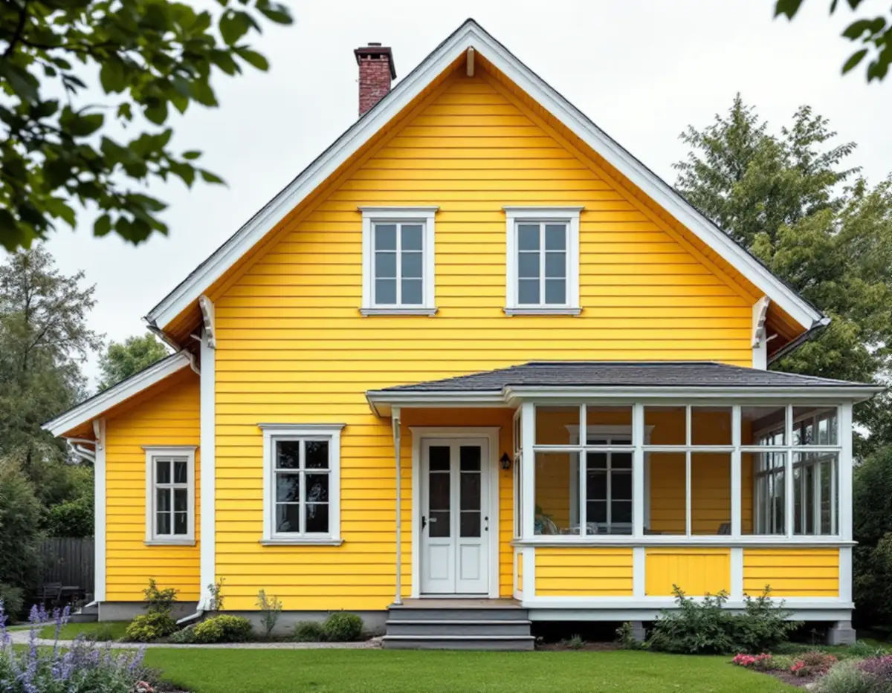
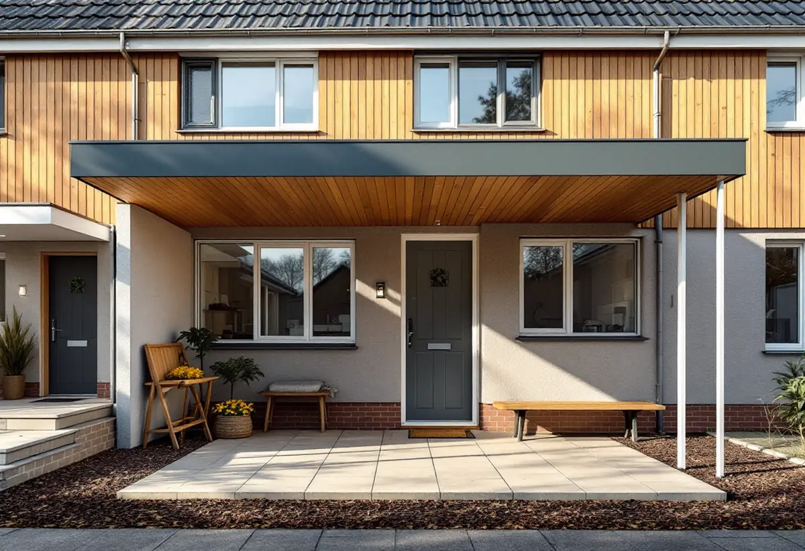

Byggår och ritningar
Vi utgår från husets epok och, när det finns, ritningar från kommunens arkiv.
Behöver du en snickare i Täby är huset troligen antingen en villa från villastädernas tid vid Roslagsbanan eller ett grupphus från 1960–80-talen. Vi lagar fönster, dörrar och glasverandor, bygger altaner och carportar och planerar om invändigt – med kommunens kulturmiljöriktlinjer som stöd för vad som passar huset.

Täby villastad vid kyrkbyn växte fram efter en avstyckningsplan från 1907, och Byle planerades samma år efter trädgårdsstadens ideal med stora tomter. Kommunens underlag Kulturmiljöer i Täby beskriver villorna från tidigt 1900-tal med branta, ofta brutna tak, och skriver att takkupor, förstukvistar, burspråk och glasverandor är vanliga och att fönstren ofta är spröjsade. Fasaderna har ofta liggande spontad panel, målad med Falu rödfärg eller i ljusa toner, med vita foder, vindskivor och knutar.
I Näsbypark står villor från 1920–30-talen, bland annat en vitputsad villa från 1926 med mörkt gröna fönstersnickerier och en villa från 1939 med snidad entrédörr i mörkt trä. Efterkrigstiden gav grupphusen, där ett par hus från 1968 har tegel i bottenvåningen och träpanel under fönstren, och envåningshusen ofta har platt tak med brett panelat takband.
Det är alltså stor skillnad på att byta en dörr i Byle och i ett 1970-talshus i Gribbylund. Därför börjar vi med husets byggår och ritningar, som kan finnas kvar hos kommunen.

Kulturmiljöunderlaget ger ovanligt konkreta råd. Äldre fönster kan vara av hög kvalitet och är ofta värda att underhålla, eventuellt kompletterade med invändigt energiglas. Tilläggsisoleras fasaden bör fönstren flyttas ut så att de sitter som förut i förhållande till fasaden, och takfoten kan behöva förlängas. Om dörrar skriver kommunen att särskilt entrédörrar är viktiga, och att man ska undersöka om en ny dörr passar husets stil.
För villabebyggelsen kring kyrkbyn och Byle rekommenderas att fönster utformas i trä och likt originalen. Kommunen föreslår också att den som ska bygga till ett hus med höga kulturvärden tidigt tar råd av en sakkunnig avseende kulturvärden, till exempel en byggnadsantikvarie, en arkitekt eller en snickare med kunskap om kulturmiljövård.
För oss betyder det att vi i första hand lagar: byter rötskadade delar i bågar och karmar, kittar om och justerar beslag, och tillverkar nya verandadelar efter de gamla. Ska fönstren ändå bytas finns mer att läsa om fönsterbyte.
I grupphusområdena bygger värdet på helheten. Täbys riktlinjer säger att tillägg som carport och altan ska anpassas till husets formspråk, utan avvikande takvinklar, för stora volymer eller kraftiga kontraster i material och färg, och att befintliga takformer och takfotens utformning bör väljas även för tillbyggnader. En carport på ett platt-taksradhus får alltså gärna ett lika lågt tak med samma takband.
Tomterna i radhusområdena är smala. Enligt Boverket ska en lovfri tillbyggnad ligga minst 4,5 meter från gränsen eller ha grannens skriftliga medgivande, och samma gräns gäller för en altan. Det enklaste är att grannarna skriver på en ritning som visar vad som ska byggas. Större utbyggnader beskriver vi under tillbyggnad.
Täby kommun skriver på sidan om fasadändring att det inte behövs bygglov för fasadändringar på en- och tvåbostadshus om byggnaden inte är särskilt värdefull, inte ligger i ett särskilt värdefullt område och inte har utökad lovplikt i detaljplanen. Nya fönster eller en ny entrédörr är därför oftast lovfria på en vanlig villa, men ska fortfarande göras varsamt.
Ligger huset i en värdefull kulturmiljö och har fastigheten bestämmelser i detaljplanen, som q, Q eller k, rekommenderar kommunen i Kulturmiljöer i Täby att du hör av dig och frågar vad som gäller. Underlaget är inte juridiskt bindande, men det används när kommunen gör sina bedömningar. Påverkar arbetet bärande delar, till exempel en ny öppning i en bärande vägg, krävs anmälan och startbesked.
I villorna från 1970- och 1980-talen i Gribbylund och Skarpäng önskar många ett öppnare kök och vardagsrum eller ett extra rum på övervåningen. Vi tar fram om väggen är bärande, bygger nya väggar med ljudisolering och sätter dörrar, foder och lister som passar huset. Platsbyggda garderober och trappor anpassas efter de mått som finns.
I en äldre villa i Roslags-Näsby eller Viggbyholm är det tvärtom ofta de gamla snickerierna som ska bevaras: innerdörrar, trappräcken och foder lagas, och nya delar görs i samma profil. Hör arbetet ihop med ett större grepp om huset samordnar vi det som en villarenovering.
Vi utgår från husets epok och, när det finns, ritningar från kommunens arkiv.
Vi läser detaljplanen och ser om huset beskrivs i Kulturmiljöer i Täby.
Fönster, dörrar, veranda och stomme undersöks, och profiler mäts upp om något ska kopieras.
Du får ett skriftligt förslag som skiljer på lagning och byte, med vad det betyder för husets utseende.
Vid bygge nära gräns tar vi fram en ritning som grannarna kan skriva på.
Vi bygger, går igenom arbetet med dig och lämnar en sammanställning.
Arbetskostnaden ger 30 procent i rotavdrag, högst 50 000 kr per person och år och högst 75 000 kr tillsammans med rut. Materialet räknas inte. Vi drar av beloppet direkt på fakturan, och äger ni huset tillsammans kan ni dela upp avdraget.
Enligt Skatteverket ger det avdrag att reparera eller byta fönster, glasa in en altan och bygga en altan som sitter ihop med huset. En fristående ny byggnad ger inget avdrag, och för om- och tillbyggnad ska huset ha passerat fem år från värdeåret.
Det som styr mest är hur mycket som kan lagas jämfört med att bytas, om fönster- och dörrdetaljer ska specialtillverkas, hur stor altanen eller carporten blir och om något bärande berörs. Vi kommer på ett kostnadsfritt besök och lämnar ett skriftligt kostnadsförslag.
Altan, väggar, dörrar och inredning.
Snickare i Stockholm →Takbyte, takbesiktning och plåtarbeten.
Takläggare i Täby →Näsbypark, Viggbyholm och Gribbylund.
Takrenovering i Täby →Villastäder och grupphus i Täby.
Fönsterbyte i Täby →Stationsvillor, funkis och grupphus i Täby.
Plåtslagare i Täby →